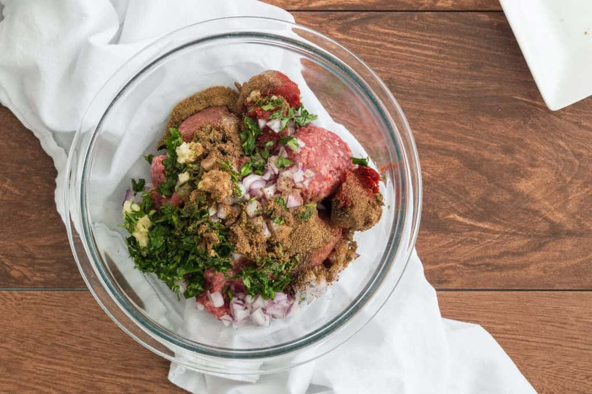

Shashlik (beef kebab
Description
Beef Kebabs (or Shish kebabs) are a very important food and specialty of the Slavic people, but it’s not just limited to beef. Lamb, pork , chicken and even veggie kabobs are often on the menu!
Ingredients for Beef Kebabs
- 2 lbs good quality beef (I used top sirloin), cut into 1 1/2″ pieces
- 2 Bell peppers, any color, sliced into 1 1/2″ wide pieces
- 1 large Purple Onion, sliced into 1 1/2″ wide pieces
- 5 medium bamboo or wood skewers
Ingredients for Beef Kebabs Marinade
- 1 cup mild olive oil
- 1/2 cup fresh lemon juice (from 2 medium lemons)
- 1 tsp salt (we love fine sea salt)
- 1 tsp freshly ground black pepper
- 4 garlic cloves, pressed
- 3 Tbsp fresh or frozen dill, chopped (or 1 Tbsp dry dill weed)
- 2 dry bay leaves
Instructions

- Combine all of your marinade ingredients in a large glass or plastic bowl (do not use aluminum) and stir to combine.
- Slice meat and transfer it into the marinade bowl, stirring well to coat. Marinate beef in the refrigerate4 to 6 hours, stirring a few times while marinating to make sure meat is evenly marinated. Note: Sometimes after long periods of refrigeration, the oil in the marinade can firm up a bit; it will liquify again if you let the marinated meat sit at room temp 30 minutes before skewering.
- Soak bamboo or wooden skewers at last 30 min. After the meat is done marinating, slice veggies and skewer them with meat onto Bamboo skewers. Brush/ pour remaining marinade over skewers.
- Grill over med/high heat for about 8-10 minutes or until you've reached the desired doneness, rotating every 2-3 minutes for even grilling. Remove kebobs from grill and let them rest at least 5 minutes before eating. If you cut into them right away, they will juice out and end up dry. Serve with your favorite steak sauce
Enjoy!